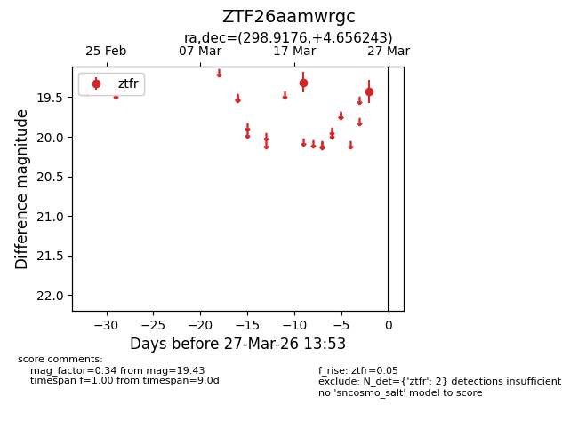
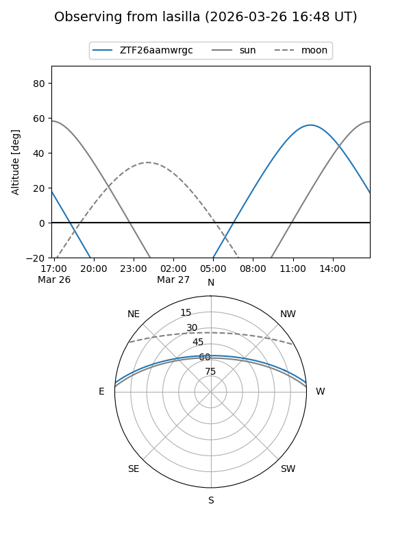
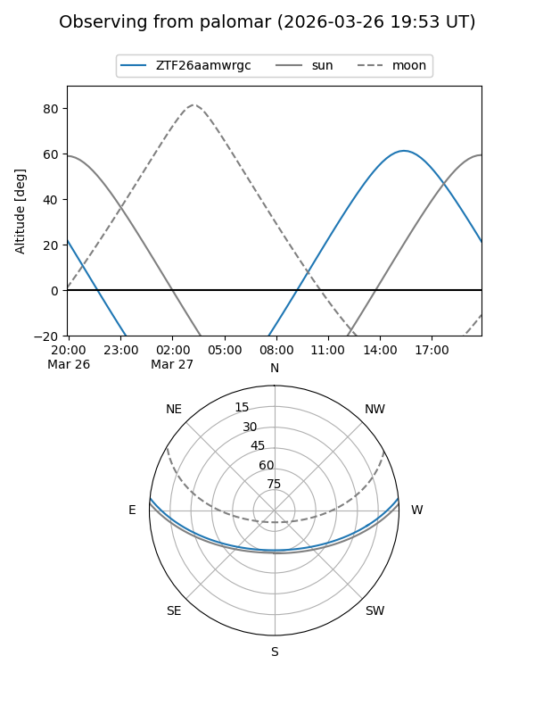

ZTF26aamwrgc
Target ZTF26aamwrgc at 2026-03-27 13:56
Aliases and brokers:
FINK: link
Lasair: link
ALeRCE: link
alt names
ZTF26aamwrgc (ztf,fink_ztf)
Coordinates:
equatorial (ra, dec) = 298.9176,+4.65624
equatorial (HMS+DMS) = 19:55:40.22,+04:39:22.47
galactic (l, b) = (44.6095,-12.02588)
Flags:
Photometry:
last ztfr=19.43
2 ztfr detections
Lightcurve

Visibility


Additional plots